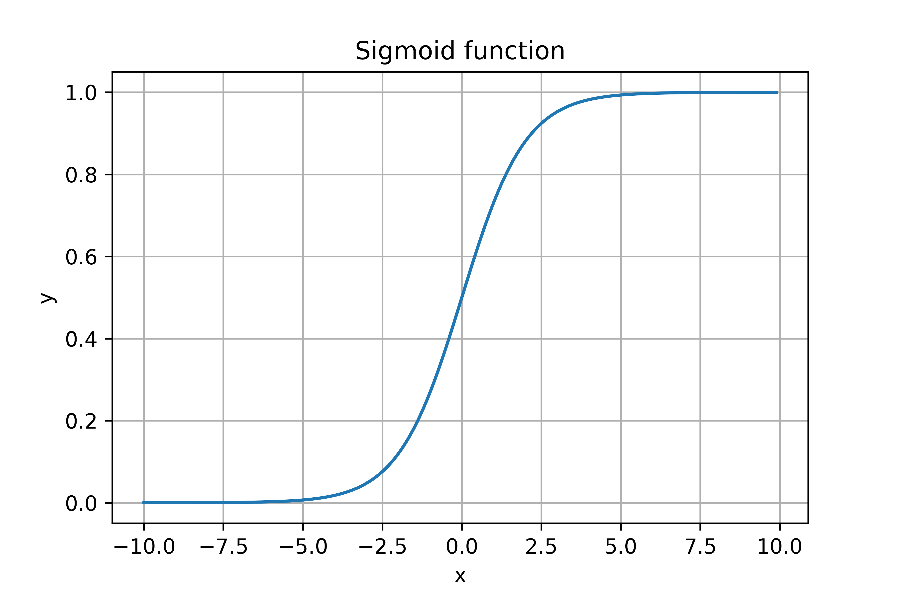
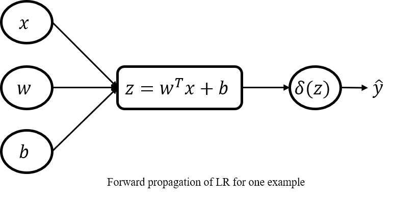

Logistic regression (LR) is a binary classification algorithm for predicting discrete values (In general, the predicted result is 0 or 1). This blog will detail the modeling approach, loss function, forward and backward propagation of LR. In the end, I will use python with numpy to implement LR and give the use on data sets iris and mnist. You can find all the code here.
Sigmoid function
Sigmoid function also called logistic function is an S-shaped function that “squashes” the variable into the range [0, 1]. The sigmoid function is defined by the following formula:
$$ \delta(x) = \frac{1}{1 + e^{-x}} $$
The function image of the sigmoid function is an sigmoid curve.

In machine learning, we often use the derivative of the sigmoid function. So Let’s first calculate the derivative of the sigmoid function:
$$ \delta’(x) = \frac{e^{-x}}{(1+e^{-x})^2} = \frac{1}{1+e^{-x}} \cdot \frac{1+e^{-x}-1}{1+e^{-x}} = \delta(x) \cdot (1-\delta(x))$$
The sigmoid function has two common uses.
- Activation function as a neural network;
- Used for probabilistic modeling for binary classification.
In this blog, we mainly use the sigmoid function in binary classification.
Modeling approach
In LR we use sigmoid function to model probability. Now suppose we have a binary classification problem, and we got a training set $ {(x_1, y_1), (x_2, y_2), …, (x_m, y_m)} $ of $ m $ labeled examples, where the input features are $ x_i \in \Re^{[n, 1]} $. To solve this binary classification problem, we need to build a classification model and train the model with the existing m samples. If we choose the appropriate model and do the right training, then we can use the model we trained to predict the new sample to determine which category it belongs to. Based on our understanding of the sigmoid function, we can see that it is very suitable for solving binary classification problems. We can take the value of the sigmoid function as the probability that the sample belongs to a certain category. More formal, if $ y \in {0, 1} $. Then LR can be expressed as:
$$ P(y=1 | x;w,b)=\frac{1}{1+e^{-(w^Tx+b)}} $$
$$ P(y=0 | x;w,b)=1-p(y=1|x;w,b) $$
Which $ w \in \Re ^ {[n, 1]} $ is the weight vector of the model, $ b \in \Re $ is the bias term. For the convenience of writing, let $ \hat{y}=P(y=1 | x;w,b) $.
Loss function
Based on the LR model, we can derive its objective function by the maximum likelihood method. Our goal is to minimize the difference between the predicted and actual values of the model, which is equivalent to:
$$ maximize \ \ \ \ P(y=1|x;w,b)^y \cdot P(y=0|x;w,b)^{1-y} $$
$$ maximize \ \ \ \ P(y=1|x;w,b)^y \cdot (1-P(y=1|x;w,b))^{1-y} $$
$$ maximize \ \ \ \ \hat{y}^y \cdot (1-\hat{y})^{1-y} $$
$$ minimize \ \ \ \ -log[\hat{y}^y \cdot (1-\hat{y})^{1-y}] $$
$$ minimize \ \ \ \ -[y \cdot log\hat{y} + (1-y) \cdot log(1-\hat{y})] $$
So the loss function of LR is:
$$ \mathcal L(y, \hat{y})=-[y \cdot log\hat{y} + (1-y) \cdot log(1-\hat{y})] $$
Gradient derivation
In order to train the LR model, we need to update the gradient of the model’s weight vector. Although the automatic differentiation algorithm can help us automate this operation. In this blog I will still manually derive the gradient of the weight vector to deepen the understanding of LR.
The forward propagation of the LR model is as follows:

- for one example:
$$ z=w^Tx+b $$
$$ \hat{y}=\delta{(z)} $$ - vectorization:
$$ Z=Xw+b $$
$$ \hat{Y}=\delta{(Z)} $$
Based on the chain rule we can easily find the gradient of any variable. - for one example:
$$ \frac{\partial \mathcal L}{\partial \hat{y}}=-\frac{y}{\hat{y}} + \frac{1-y}{1-\hat{y}} $$
$$ \frac{\partial \hat{y}}{\partial z}=\hat{y}\cdot(1-\hat{y}) $$
$$ \frac{\partial z}{\partial w}=x \ \ \ \ \frac{\partial z}{\partial b}=1 $$
$$ \frac{\partial \mathcal L}{\partial w}=\frac{\partial \mathcal L}{\partial \hat{y}} \cdot \frac{\partial \hat{y}}{\partial z} \cdot \frac{\partial z}{\partial w}=x(\hat{y}-y) $$
$$ \frac{\partial \mathcal L}{\partial b}=\frac{\partial \mathcal L}{\partial \hat{y}} \cdot \frac{\partial \hat{y}}{\partial z} \cdot \frac{\partial z}{\partial b}=\hat{y}-y $$
- vectorization (m is the number of examples, n is the number of features):
$$ \frac{\partial \mathcal L}{\partial w}=\frac{1}{m}X^T(\hat{Y}-Y) \ \ \ \ X \in \Re^{[m, n]} \ \ \ \ Y, \hat{Y} \in \Re^{[m, 1]} $$
$$ \frac{\partial \mathcal L}{\partial b}=\frac{1}{m}\sum (\hat{Y}-Y) $$
Implementation
With the existing library we can implement LR very conveniently. But here we use pure python with numpy to achieve deeper understanding of LR. In order to follow the habit we use the same interface as sklearn.
With numpy we can easily implement sigmoid function.
1 | def sigmoid(x): |
The LR model can also be quickly implemented based on the above derivation.
1 | class LogisticRegression: |
Example
In order to verify the correctness of the implementation. I experimented on the irsi dataset and the mnist dataset. The parameters and results of the experiment are as follows:
| iris | mnist | |
|---|---|---|
| learnig rate | 0.1 | 0.01 |
| max iterate | 100 | 300 |
| test accuracy | 100% | 99.86% |
You can find the all the experimental code here and reproduce the experimental results.
本博客所有文章除特别声明外, 均采用CC BY-NC-SA 3.0 CN许可协议. 转载请注明出处!
关注笔者微信公众号获得最新文章推送